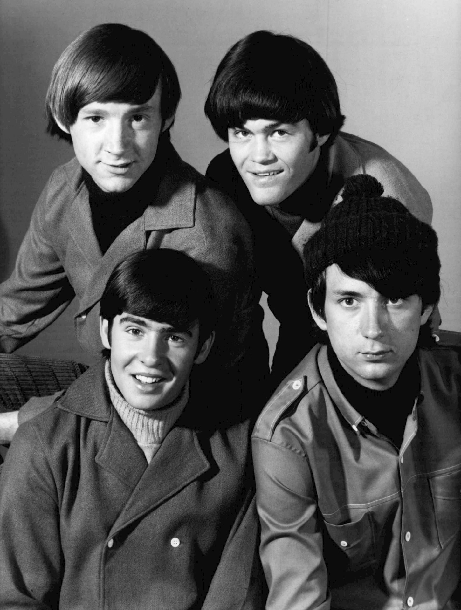

I'm a Believer is the 1966 single by The Monkees, written by Neil Diamond.
Colgems released it in November 1966.
It spent seven weeks at No. 1 in the US and four in the UK.

Table of Contents
The Story Behind I'm a Believer
A Brill Building Songwriter Finds a Hit
Neil Diamond started out as a Brill Building songwriter, working under Jeff Barry and Ellie Greenwich.
His own single "Cherry, Cherry" reached No. 6 in 1966.
Don Kirshner, who oversaw the music for The Monkees TV show, heard it on the radio.
He asked Diamond for more songs in the same style.
Written for Someone Else
Diamond already had I'm a Believer ready.
Ultimate Classic Rock reports that he first imagined it as a country record for Eddy Arnold.
Diamond also offered it to the Fifth Estate, who recorded their own version in 1967.
The Monkees got to it first.
Diamond's Reaction
In a 2008 interview with Mojo, Diamond said his label head "went through the roof."
The executive felt Diamond had given No. 1 records away to another group.
Diamond said he "couldn't have cared less," because he had rent to pay and wanted his songs on the charts.
Recording the Hit
The Sessions
The Monkees recorded the song on October 15 and October 22 to 25, 1966.
The sessions took place at RCA Victor Studio in New York.
Jeff Barry produced, and Artie Butler wrote the arrangement.
Micky Dolenz sang lead, with Davy Jones and Peter Tork on backing vocals.
Who Played on It
Session players supplied the music, which was common on the early Monkees singles.
The musicians credited by Wikipedia, citing Andrew Sandoval, include:
- Al Gorgoni and Sal DiTroia on electric guitars
- Neil Diamond on acoustic guitar
- Stan Free on Vox Continental organ
- George Butcher on electric piano
- Russ Savakus on bass
- Buddy Saltzman on drums
Stereogum reports that Michael Nesmith argued the song would not be a hit.
The band later fought for the right to play its own instruments, and Headquarters followed in 1967.
How It Charted
In the US
The record went to No. 1 on the chart dated December 31, 1966.
It stayed there seven weeks and was the last chart-topper of 1966.
Ultimate Classic Rock reports more than one million advance orders.
Many sources call it the biggest-selling single of 1967, though Billboard's year-end Hot 100 ranked it No. 5.
Around the World
In the UK it reached No. 1 and held it for four weeks in January and February 1967.
The B-side was "(I'm Not Your) Steppin' Stone."
| Measure | Detail | Result |
|---|---|---|
| Billboard Hot 100 | US pop peak, 1966 to 1967 | No. 1 (7 weeks) |
| UK Singles Chart | Peak, early 1967 | No. 1 (4 weeks) |
| Billboard year-end Hot 100 | 1967 ranking | No. 5 |
| Rolling Stone 500 Greatest Songs | 2021 list | No. 341 |
Legacy and Covers
On Screen and in Stores
The song played in four consecutive episodes of the TV series in December 1966.
The album More of the Monkees carried it, and Diamond cut his own version for Just for You in 1967.
His recording reached No. 51 on the Hot 100 in 1971.
Covers
Many acts have taken it on:
- Robert Wyatt released a version in 1974 that reached No. 29 in the UK, with Nick Mason producing.
- EMF teamed with Reeves and Mortimer in 1995 for a UK No. 3.
- Smash Mouth recorded it for the 2001 film Shrek, and it reached No. 25 on the Hot 100.
Where It Fits
I'm a Believer is the high point of 1966 teen pop, and it was still the year's top seller as 1967 began.
It is also on our 100 best 60s songs list.
The band's full story is in our Monkees biography, and the genre is covered in the Pop and Brill Building hub.
FAQ
Who wrote I'm a Believer?
Neil Diamond wrote it.
He had first pitched it to other acts, and Don Kirshner, who oversaw The Monkees' music, steered it to the group.
Who sang lead on The Monkees' version?
Micky Dolenz sang lead, with Davy Jones and Peter Tork on backing vocals.
Studio musicians played the instruments.
How long was this song at No. 1?
It spent seven weeks at No.
1 on the Billboard Hot 100, starting with the chart dated December 31, 1966.
It also spent four weeks at No.
1 in the UK in early 1967.
Did Neil Diamond record his own version?
Yes.
Diamond put his own recording on his 1967 album Just for You.
It later reached No. 51 on the Hot 100 in 1971.
Why is this song in Shrek?
Smash Mouth covered it for the 2001 film Shrek, and Eddie Murphy also sings it as Donkey.
The Smash Mouth single reached No. 25 on the Hot 100.
A Brill Building songwriter's spare tune became the sound of a TV band's biggest year.
Wikipedia's entry on the song covers its history and charts in more depth.
Press play above and hear why it still gets people singing along.